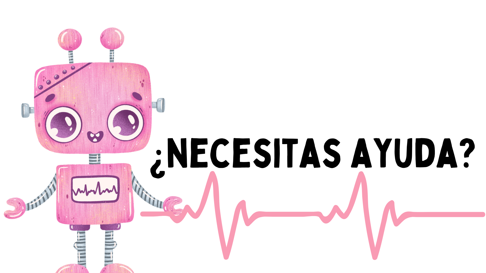

Programas para simular una casa inteligente

Para este proyecto, te ofrezco algunos programas muy sencillos que puedes utilizar para simular distintos dispositivos de una casa inteligente.
Termostato para el hogar
Un termostato controla la temperatura del hogar y acciona un dispositivo en función del nivel de temperatura. Programa un termostato que muestre la temperatura en ºC cada cierto tiempo. Como actuador, utilizaremos la matriz de leds que mostrará un sol al superar los 25º y un copo de nieve con la temperatura por debajo de los 10º.
En este proyecto vamos a trabajar:
- Entorno de programación por bloques MakeCode https://makecode.microbit.org/
- Bucles, condicionales y comparaciones.
- Intervalos.
- Conceptos de temperatura y ahorro energético.
- Contenidos sobre dispositivos del hogar.

Imagen del proyecto
{kind=link}
Accede al código del proyecto https://makecode.microbit.org/_JUJiyCMirDJY
Encendido inteligente de leds
Es importante concienciarse en el ahorro energético y el aprovechamiento de la luz solar en el hogar. Cada vez resulta más habitual encontrar luces inteligentes que se regulan dependiendo de la luz ambiente. Para esta tarea, vas a utilizar MakeCode para programar la iluminación gradual de leds dependiendo de la luz externa recibida.
En este proyecto vamos a trabajar:
- Entorno de programación por bloques MakeCode https://makecode.microbit.org/
- Bloques de matemática.
- Nivel de luz.
- Matriz de leds.
- Bucles: por siempre.
- El nivel de luz de la placa oscila entre 0 y 255 y la intensidad de los leds también entre 0 y 255.
- Conceptos de temperatura y ahorro energético.
- Contenidos sobre dispositivos del hogar.
Imagen del proyecto
{kind=link}
Accede al código del proyecto https://makecode.microbit.org/_2La5tARFy689
Persiana domótica
Utilizamos un servomotor para controlar una persiana del hogar con dependiendo del nivel de luz. Cuando la luz ambiente sea baja, el servomotor subirá para dejar pasar la luz del exterior y en caso contrario la persiana bajará. Podemos utilizar la matriz de leds para proporcionar algún tipo de información.
En este proyecto vamos a trabajar:
- Entorno de programación por bloques MakeCode https://makecode.microbit.org/
- Bloques de matemática.
- Nivel de luz.
- Matriz de leds.
- Uso de servomotores.
- El nivel de luz de la placa oscila entre 0 y 255 y la intensidad de los leds también entre 0 y 255.
Imagen del proyecto
{kind=link}
Accede al código del proyecto https://makecode.microbit.org/_b40eFYEHCRL3
Humedad de las plantas
En esta ocasión vamos a configurar la placa para conocer las condiciones del suelo y saber si se encuentra la tierra seca o húmeda. Es importante que recuerdes que el suelo posee resistencia eléctrica que depende de la cantidad de agua y nutrientes que contiene. Es decir, actúa como una resistencia variable en un circuito eléctrico.
La combinación de agua y nutrientes del suelo hace que el suelo tenga algo de conductividad. En nuestra placa micro:bit el valor de lectura será de 0 a 1023.
- 0 no hay conductividad.
- 1023 máxima conductividad.
Utiliza los botones de la placa para recibir información de la variable (humedad).
En este proyecto vamos a trabajar:
- Entorno de programación por bloques MakeCode https://makecode.microbit.org/
- Uso de variables.
- Lectura analógica de la placa (PIN 0)
- Graficado de barras en la matriz de leds.
- Recuerda conectar el circuito al PIN 0 directamente al PIN 3V para que siempre esté usando electricidad.
| Para medir esto, leemos la tensión en el pin P0 usando un pin analog red pin (lectura analógico) que devuelve un valor entre 0 (sin corriente) y 1023 (corriente máxima). El valor es un gráfico en la pantalla usando plot bar graph un (gráfico de barras de trazado). |
Imagen del proyecto
{kind=link}
Enlace al código del proyecto https://makecode.microbit.org/_1CKffgU9hW3t